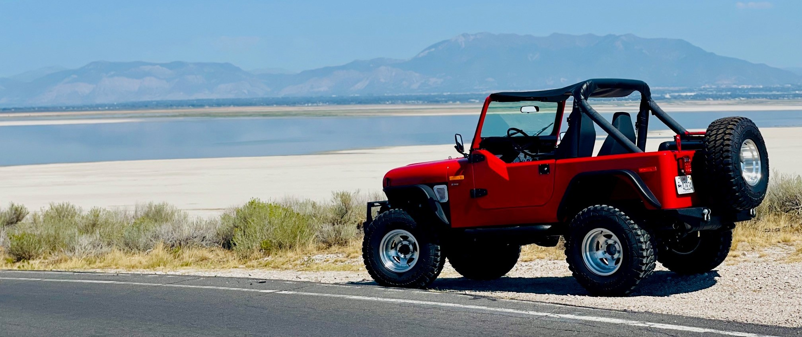
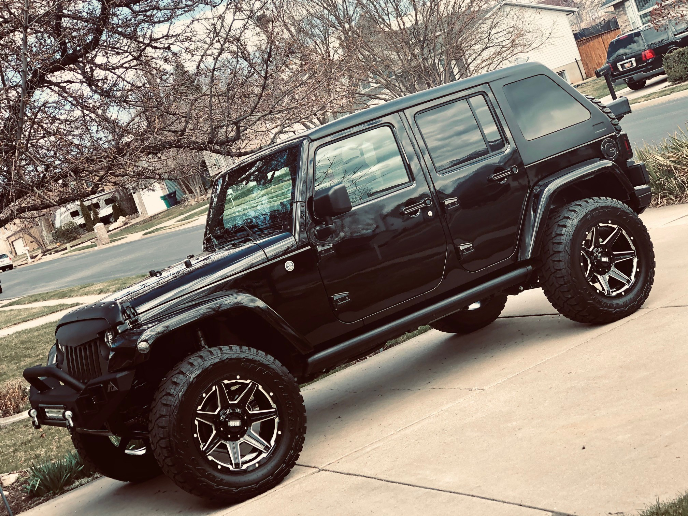

Some people collect shoes. Others collect stamps. I collect Jeeps.
Practical? Debatable. Fun? Absolutely!
It's an adventure, a lifestyle, and occasionally a questionable financial decision.

Meet Lil Red and Roxie, two Jeeps with very different personalities.
Lil Red is a 1985 Jeep CJ7 with a manual transmission, half doors, and just enough attitude to make every drive an adventure.
Roxie is a 2018 Jeep Wrangler Sahara Unlimited, offering a few more modern comforts without sacrificing the Jeep experience.

| Feature | Lil Red | Roxie |
|---|---|---|
| Year | 1985 | 2018 |
| Model | CJ7 | Wrangler Sahara Unlimited |
| Transmission | Manual | Automatic |
| Doors | Half doors | Four full doors |
| Personality | Old-school troublemaker | Modern-day adventurer |
Want to learn more about Jeep life?
Visit the official Jeep website, explore the Jeep Wrangler, or check out Kaiser Willys for vintage Jeeps, restoration parts, and accessories.